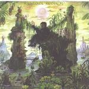

| Artist: | Raimundo Rodulfo |
| Title: | Suenos/Dreams |
| Label: | self produced UMC-001 |
| Length(s): | 68 minutes |
| Year(s) of release: | 2000 |
| Month of review: | [02/2001] |
| 2) | Amistad / Friendship | 5.14 |
| 3) | Nuevos Horizontes / New Horizons | 10.20 |
| 5) | Tiempos Dificiles / Hard Times | 9.03 |
| 6) | Matemática Y Arte / Math & Arts | 6.57 |
The next track is a bit shorter and features again a far away sounding electric guitar and a violin, more up front. The melodies sound like coming from classical music and do not really do much for me. The song has a rather folky sound to it and like the predecessor is structured around a theme that often recurs.
New Horizons opens a bit in the acoustic Yes style. In fact I was even waiting for the bass of Chris Squire to barge in, as on Roundabout. The music is rather quiet in the beginning here with willowy, tranquil flute and a bit of viola as well. The middle part is filled with breaks and interruptions of various kinds. The playing is not as fluent here as could be hoped. It seems to much an affair of stop and start, not one of organic playing. The influences of the continent the music comes from also shine through in the percussion. Some nice melodies in here, but for the most part the band is either to fickle, or too sweetly melodious for me.
Brainstorm is another nervous piece with plenty (too much) alternations and up to this point it is probably the most progressive among the tracks. Also because the keyboards are more prominent here. The guitar meanders through labyrinthine melodies. Later on a sax breaks into the song and the song becomes more jazzy. Towards the end a nice theme sets in and the music becomes rather Yes like (also in quality).
Hard Times consists to my ears of repetively played melodies that are not that great. Again the sax sets in, making for some influences from jazz rock, but it is the classical guitar and flute that dominate.
Math & Arts opens with an okay melody, which has something military to it. Again rather labyrinthine and with some brassy keyboards in the back. Again the music has references to Yes. The music is definitely jazzrock and not of the blistering kind. It all stays rather subdued.
The final track Universal Codes is with over twenty minutes by far the longest track on the album. Divided into seven parts, it seems to describe the story of mankind on Earth by starting with Nova, going to the Naked Ape, the Restless Warriors up to the Atomic Giants and finally the Global Village. The track opens with nice cosmic keyboards and ethereal sounds. The optimistic guitar that sets in the second part is soon taken over by a more majestic overture to the rest of track (it all does sound like "I've heard this before" now). This takes form by a percussive continuation which is rather playful. Sharp electric guitar follows again, again in a more introspective way, contrasting with the playful playing of just before. The guitar sound also gets a bit rougher here, but the music never becomes really loud. A certain tenseness is created here, but suddenly it seems the sun breaks through, with light acoustic guitar and the waves on the beach. The flute also returns, but I do get the feeling that this all takes a bit too long. It takes a while before the choral keyboards return and Rodulfo tries his hand and some more meandering electric guitar playing. The sound of the guitar is quite high and ethereal here, and melodically quite nice. After over 17 minutes some pace comes into the music, especially in the drumming and the music becomes more likable at that point. Rodulfo continues to play quick runs on the guitar at this point, but the music gets a bit more energy. Some themes are bound to return here, including some rather nice ones, accompanied by some cosmic keyboards.
A nice puzzle is to discover in the frontside of the backside of the disc all references to parts and titles of the songs.